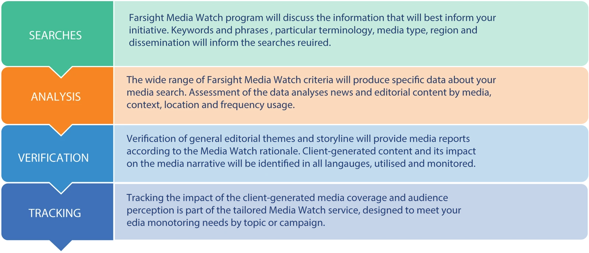

Strategic Communication
Campaigns, media and outreach that reach the public.
Introduction
Farsight Africa Group offers a comprehensive range of Strategic Communications and all associated disciplines.
Communication is an essential component for any organisation, as important as management policy, financial control or business development. Consultation with Farsight Africa Strategic Communications will assess the best organisational strategy for all levels of activity and responses, internally and client oriented. For a particular project we can develop best approaches considering the aims, target, implementation and impact assessment.
In-house communication training will develop professional skills, which we can support with our particular communication services.
We are very experienced in public outreach addressing awareness and engagement with identified target audiences, ranging from a specialised group by topic or location to a broad campaign aimed at international organisations and populations. We have assisted micro-focused political initiatives, commercial development and global awareness campaigns.
The more focused the campaign, the more important it is to develop a deep understanding of the environment. This has been the hallmark of our targeted campaigns in Somalia and East Africa, where we work closely with communities, regional authorities and international players to understand atmospherics and local conditions before creating specific campaigns. Our partners in these regions have included the African Union, AMISOM, UNSOM, UNSOS, EU and UNMISS.
Media Monitoring, Analysis and Media Management
It is essential to understand the media environment in which you are working. Our real-time cross-platform Media Monitoring tailors this research to match your interests, regions and types of media.
Essential for public, development and commercial organisations, Farsight Media Monitoring tracks social, print, radio and TV media reporting on trends and atmospheres, as well as client-initiated Strategic Communication output and its impact in the public sphere. We provide verifiable information and trends, and assessments on misinformation and fake news.
Continual tracking will report on specific media reporting, updating searches as a campaign develops, with analysis providing evidence of impact and key lessons from your project. This will inform further planning and reports that support you and other stakeholders.


Content Production
Communication can be directed internally to close networks and communities, or to a wider public audience. Internal communications can enable a smooth and coordinated operational environment that will assist you in all projects and overall management. In the public sphere, it will allow you to join a relevant narrative or discourse with your point of view, preventing opposing ideas from becoming dominant in mainstream and social media.
Farsight Africa can design campaigns that will give you your place in the discussion, influencing the narrative with information and discussion, and profiling your image, accomplishments and abilities. We can produce and disseminate content that will connect you and your messages with your target audiences.
Training, Outreach and Live Events
Farsight Africa provides training for internal communications personnel and capacity building for media professionals.
Our outreach services complement strategic communication campaigns using appropriate media services, including the planning and production of live events, from venue and content management to public and security supervision. We can also link live events to live broadcast and online dissemination.
Branding and Design
This service develops and strengthens your profile, whether establishing emerging brands or rebranding your organisation. Our creative and research-based service will provide you with the branding that will describe your organisation and place you in your activity area, but make you stand out from other operators. Once your theme is established we will develop it for all forms of presentation and products.
Complementary Services
In consultation, our professional team will prepare the strategic communication services to meet your requirements, selecting from the range above and adding additional initiatives, such as:
- Crisis Management
- Media Relations
- Media Buying
- Advocacy
Related work
Social Media Campaigns
Farsight Africa has been at the forefront of making quality social media accessible to our clients, enabling them to reach their targeted audiences across all channels. Matching our mainstream media activities, our social media presence gives us access to the platforms relevant to you. These can range from a single or series of social media publications, cross-linking to maximise awareness, to a digital TV channel such as ADN TV, which provides regular in-depth news and comment from Africa and beyond.